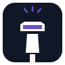
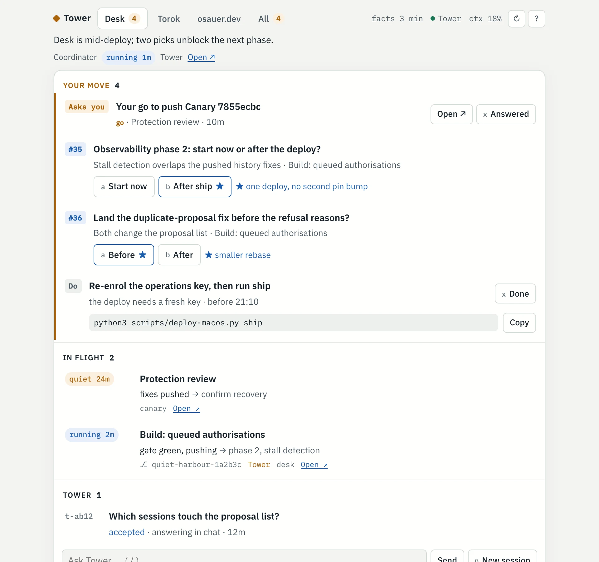
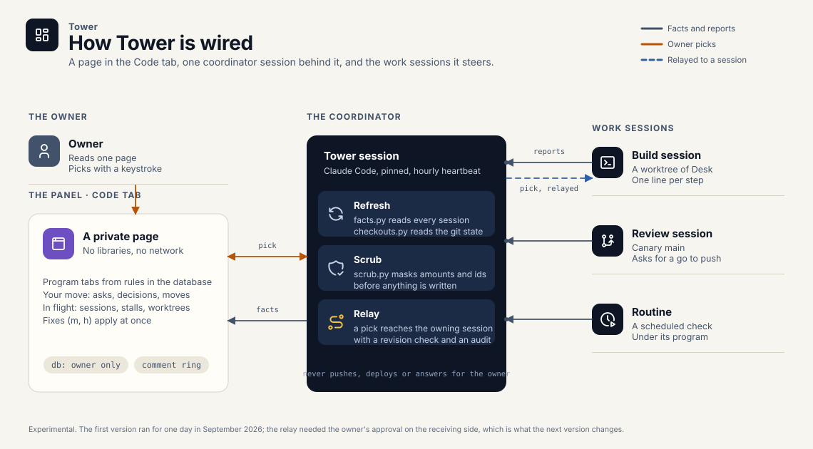

Asks, decisions, moves
An agent waiting for a go, a decision with two options and a recommendation, a command to run before a deadline. One list, most urgent first, answered with a keystroke.
Private · experimental

Coding agents, a dozen at a time, write much of Canary Desk, Torok and Canary CLI; nothing ships without the owner's decision. Tower is where those decisions are made: one page of what needs a decision, what is in flight and what has gone quiet. A pick is routed to the agent that owns the work; making that hands-free is the open problem.
An experiment, not a product. It exists because the projects on this site are built this way, and the way you steer a fleet of agents turns out to be a product question of its own.

Three things, in the order a busy day needs them.
An agent waiting for a go, a decision with two options and a recommendation, a command to run before a deadline. One list, most urgent first, answered with a keystroke.
Running, quiet or stalled, with its repository, branch and worktree. Simple rules sort sessions into program tabs; a correction on the page takes effect at once.
The coordinator carries each pick to the agent that raised it, checks that it still answers the current question, and keeps a daily record of delivered, read and acknowledged.
Three parts and one written contract between them. The panel is a private page. Tower itself is a coding agent with a charter. Work sessions report in one line each. Everything is scrubbed of amounts and identifiers before it is written, and the database belongs to the owner alone.

If you run several coding agents on one codebase and want a single page that tells you where you are needed, the contract between panel, coordinator and agents is the interesting part. Get in touch.